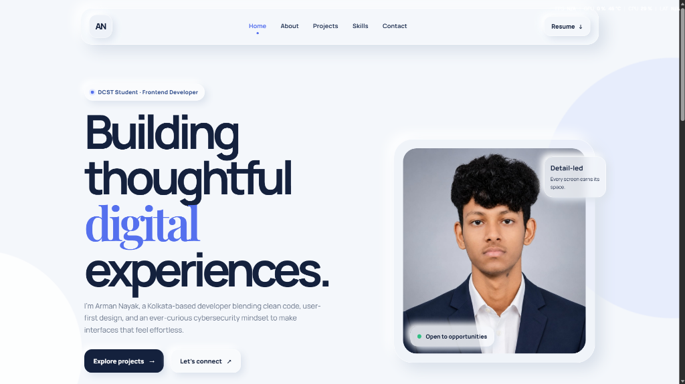

01 / Personal · Completed
Portfolio Website
A modern responsive personal portfolio website built to showcase my skills, projects and learning journey with a clean UI, smooth animations and premium user experience.
Projects where I practice building polished user interfaces, organize information clearly, and keep learning in public.

A modern responsive personal portfolio website built to showcase my skills, projects and learning journey with a clean UI, smooth animations and premium user experience.
An AI-powered assistant currently under development. The project focuses on creating a clean interface, smart interactions and helpful productivity features using modern web technologies.